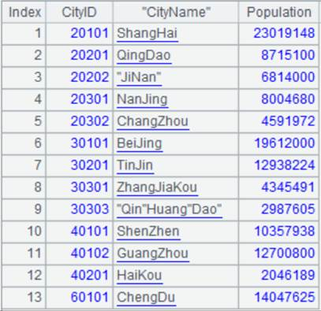
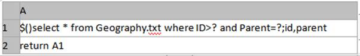
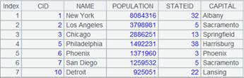
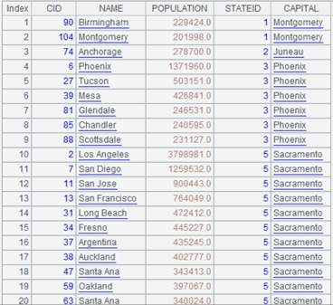

Description:
Attach a foreign-key-style join with a record sequence to a channel and return the original channel.
Syntax:
ch.join(C:.,T:K,x:F,…; …;…)
Note:
The function attaches a computation to channel ch, which will use the key of table sequence/record sequence T to match the channel’s C,… field, compute T’s field expression x and make the results values of field F and join the field to ch, and return the original channel ch.
K can be omitted or represented by #. When omitted, K is T’s key by default; when written as #, K is the sequence number of a record of table T, which means foreign key numberization. Simply put, primary key values of the dimension table are natural numbers starting from 1, which are row numbers corresponding to table records. In this case, we can directly locate dimension table records according to key values by row numbers. This helps speed up association with the dimension table and increase performance.
If there is an F field in ch, just modify the existing field of ch. Use the latest time calculated through now() when time key value is not specified.
This is an attached computation.
Option:
|
@i |
Delete the whole record if the foreign key can’t be matched; by default, make it null |
|
@o(Fi; C:.,T:K,x:F,…; …;…) |
Generate a new record by using the original record as a new field |
|
@d |
Delete the whole record matching foreign key value when parameters x:F are absent and perform filtering on ch only |
|
@m |
Use MERGE method during parallel computation when ch is ordered by the foreign key and T is ordered by its key |
Parameter:
|
ch |
A channel |
|
C |
Foreign key of a given channel; use comma to separate a composite key |
|
T |
A table sequence/record sequence |
|
K |
Key of the given table sequence/record sequence |
|
x |
A field expression of the given table sequence/record sequence |
|
F |
Name of the field expression |
Return value:
Channel
Example:
|
|
A |
B |
C |
|
|
1 |
=connect("demo").cursor("SELECT top 10 CID,NAME,POPULATION,STATEID FROM CITIES") |
|
|
A1 returns a cursor. |
|
2 |
=connect("demo").query("SELECT top 40 * FROM STATECAPITAL").keys(STATEID) |
|
|
A2 returns a table sequence using STATEID as the key:
|
|
3 |
=channel() |
=A3.join(STATEID,A2,CAPITAL) |
=B3.fetch() |
A3 creates a channel; B3 attaches a computation to channel A3, which will perform a foreign-key-style association between CITIES table and STATECAPITAL table, whose key, which is STATEID, is specified by parameter K by default, and join STATECAPITAL table’s field CAPITAL to the channel, and returns result to channel A3. C3 executes the result set function in channel A2 and keeps the current data in channel. |
|
4 |
=channel() |
=A4.join(STATEID,A2:#,CAPITAL) |
=B4.fetch() |
A4 creates a channel; B4 attaches a computation to channel A4 and returns result to channel A4. STATEID field values are natural numbers starting from 1, which correspond to record numbers in STATECAPITAL table; so parameter K can be specified as # to use those record numbers, which helps increase computing efficiency. C4 executes the result set function in channel A2 and keeps the current data in channel. |
|
5 |
=channel() |
=A5.join@i(STATEID,A2,CAPITAL) |
=B5.fetch() |
A5 creates a channel; B5 attaches a computation to channel A5, which will use @i option to delete the whole record in the channel if its foreign key cannot find a match – record the record as null by default – and returns result to channel A5. C5 executes the result set function in channel A2 and keeps the current data in channel. |
|
6 |
=channel() |
=A6.join@d(STATEID,A2) |
=B6.fetch() |
A6 creates a channel; B6 attaches a computation to channel A6, which will perform a filtering operation only on table CITIES and use @d option to delete the whole record in the channel if its foreign key finds a match when parameters x:F are absent, and returns result to channel A6. C6 executes the result set function in channel A2 and keeps the current data in channel. |
|
7 |
=channel() |
=A7.join@o(cities;STATEID,A2,CAPITAL) |
=B7.fetch() |
A7 creates a channel; B7 attaches a computation to channel A7, which will use @o option to generate new records using the original records of the channel as field cities, and returns result to channel A7. C7 executes the result set function in channel A2 and keeps the current data in channel. |
|
8 |
=A1.push(A3,A4,A5,A6,A7) |
|
|
Be ready to push cursor A1’s data to channels A3, A4, A5, A6 and A7, but the action needs to wait. |
|
9 |
=A1.fetch() |
|
|
Fetch data from cursor A1 while pushing data to the channels to execute the attached computations and keep the results. Below is the returned result:  |
|
10 |
=A3.result() |
|
|
Get channel A3’s result:
|
|
11 |
=A4.result() |
|
|
Get channel A4’s result:  |
|
12 |
=A5.result() |
|
|
Get channel A5’s result:  |
|
13 |
=A6.result() |
|
|
Get channel A6’s result:  |
|
14 |
=A7.result() |
|
|
Get channel A7’s result:
|